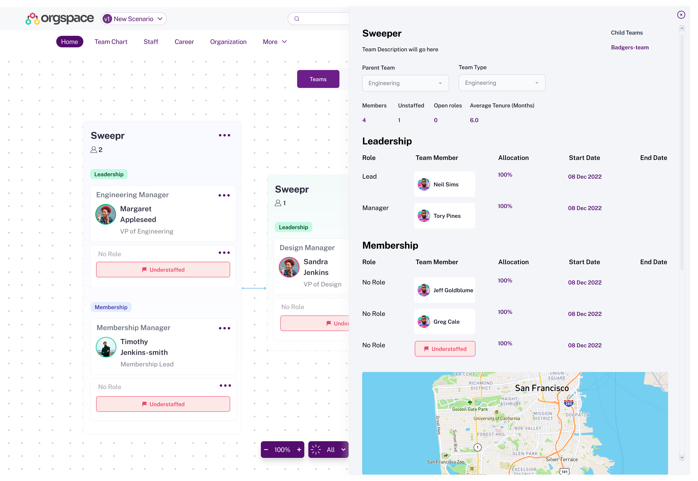
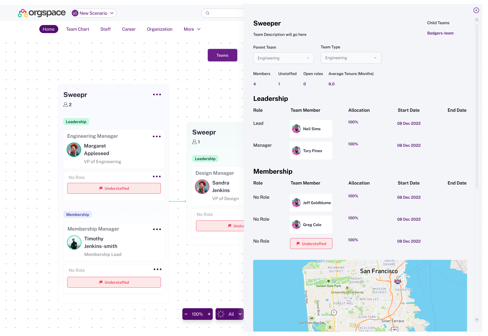

Over the course of a few months, I worked as a UX Design consultant for a company called Artium. During that time, Orgspace was one my their clients. I now freelance for Orgspace on the side.
Timeline
The project took one month to complete. The following is a breakdown of the timeline: Week 1: Research and planning Week 2: Wireframing and prototyping Week 3: Design reviews Week 4: Development Handoff


Problem
Orgspace is a software company that provides a platform for businesses to manage their organizations. They had previously raised a few million dollars to build their MVP product but struggled to get users to adopt it. Their main problem was that the onboarding process was too complicated and time-consuming. As a result, many users were abandoning the product before they could even get started.


Solution
I was brought on to redesign the user experience of Orgspace. I started by talking to the company's founders and understanding their goals for the product. I also conducted user research to identify the pain points that users were experiencing. Based on this information, I designed a new onboarding process that was simpler and more intuitive. I also created a demo mode that allowed users to try the product before committing to using it. In addition, I redesigned the org chart to make it easier for users to understand the structure of their organization.
 


Schedule a 1:1 Mentorship Session
I offer mentorship sessions for UX career growth, Portfolio and Resume Reviews.